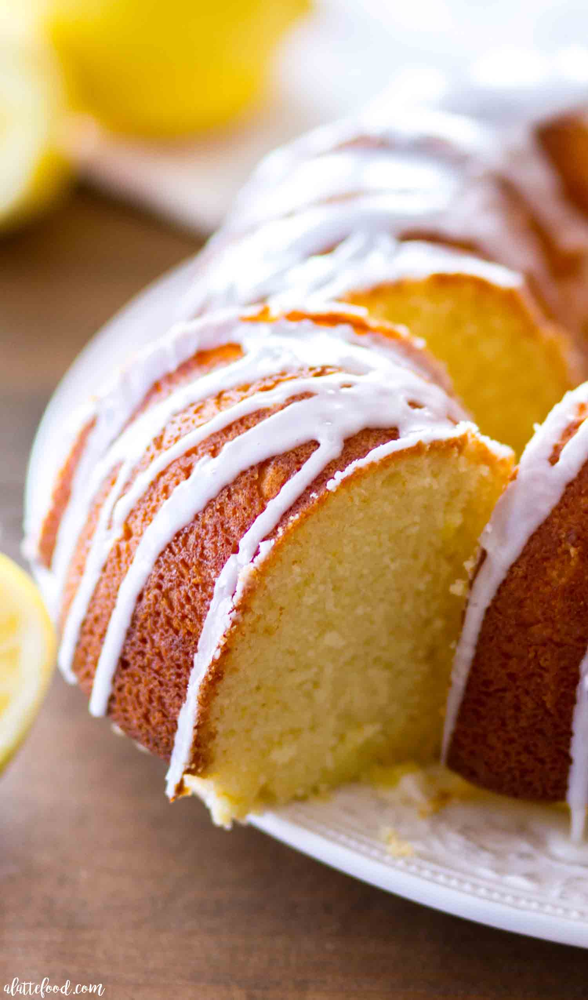

Lemon Pound Cake

Lemon pound cake recipe from scratch
This recipe is more tedious than our Fruit Dip Recipe but even more rewarding!
Ingredients
- Half a Dozen Eggs
- 1 Box of Swans Down Cake Flour
- 2 Blocks of Cream Cheese
- Vanilla Extract
- Lemon Extract
- Lemon Juice
- Dominos Powered Sugar
- Dominos Cane sugar
Cake Steps
- Let all ingredients sit out unrefridgerated to make the mixing process quicker. This will aid in having a smooth batter!
- Preheat your oven to 325 degrees and grab a big bowl
- Swift 3 cups of flour into a big bowl
- Add in 1 block of cream cheese
- Sift in 3 cups of cane sugar
- Mix flour and cream cheese together mixer until smooth
- Add in eggs. Mix these one by one and not all together. This step is crucial for a fully cooked caked!
- Add two table spoons of both vanilla and lemon extract in. Don't add too much vanilla because this extract is very overwhelming in flavor.
- After your extract, slowly pour your batter evenly into desired cake shaper and place in oven. I prefer the bundt shape!
- Levae in oven for exactly an hour and a half and remove!
Glaze steps
- Grab smaller bowl and scoop half a block of cream cheese in
- Add Lemon Juice
- Add powdered sugar for consistency
- The amount for these ingredients are based on prefrence. Experient until you acheive desired flavor and texture!